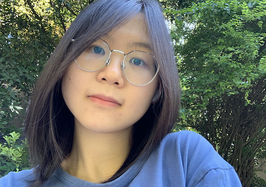

chendq@uw.edu
Department of Earth and Space Science
Univeristy of Washington
Seattle, Washington
Intro
I am Danqiu Chen(Pronunciation: "Dan-Chiou", and my Chinese name is 陈丹丘).
I have a broad interest in ancient atmosphere and environmental geochemistry. Particularly, My research interests mainly includes
I am currently a phD student at UW in the Dept of Earth and Space Sciences and Astrobiology program, working with Prof.David Catling. I receive my bachelor's degree in Geochemistry at Peking University, 2021.
At PKU, I was advised by Porf. Huiming Bao on my undergraduate research program since 2019, working on O-17 depletion event recorded by global barite at post-Marinoan Snowball Earth Event. My undergraduate thesis adviosr is Dr. Ming Tang, and I mainly used Eu anomalies from a bunch of subduction volcanic rocks to simulate feldspar crystallization depth at global convergent boundaries. I also visited Purple Mountain Observatory, Chinese Academy of Science in 2020, advised by Prof. Yunzhao Wu, mainly working on lunar surface minerals identification.